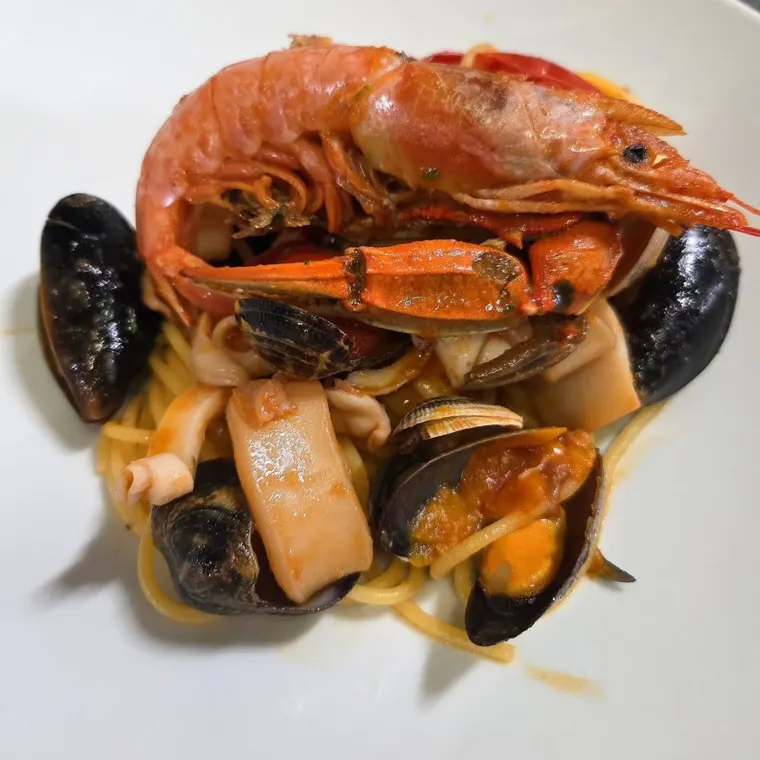
Spaghetto di mare
vongole, calamari, cozze, granchio e gamberoni
Sito dimostrativo

vongole, calamari, cozze, granchio e gamberoni
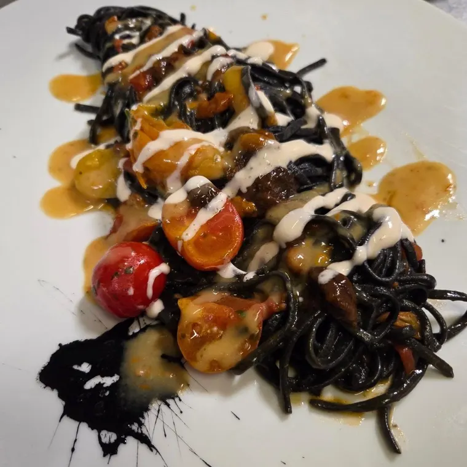
ricci di mare e crema di datterino giallo
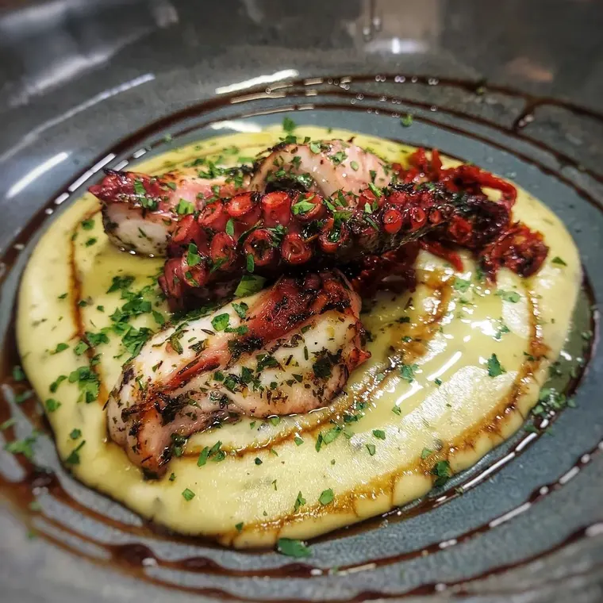
cremoso di patate e balsamico di Modena al caramello
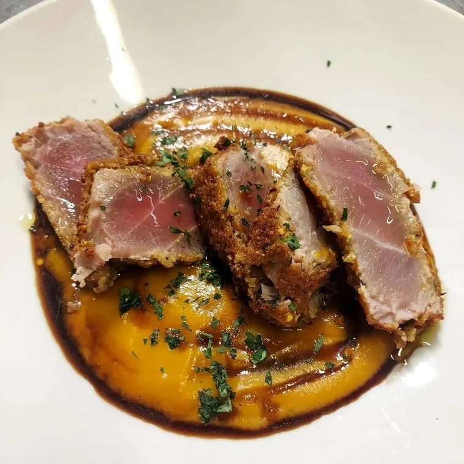
crema di zucca e ristretto di aceto balsamico
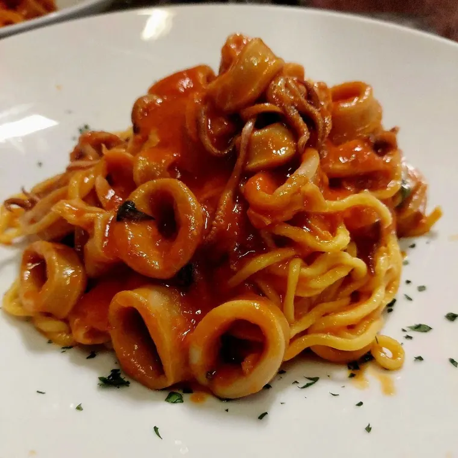
calamaro a lunga cottura, salsa di datterini e basilico
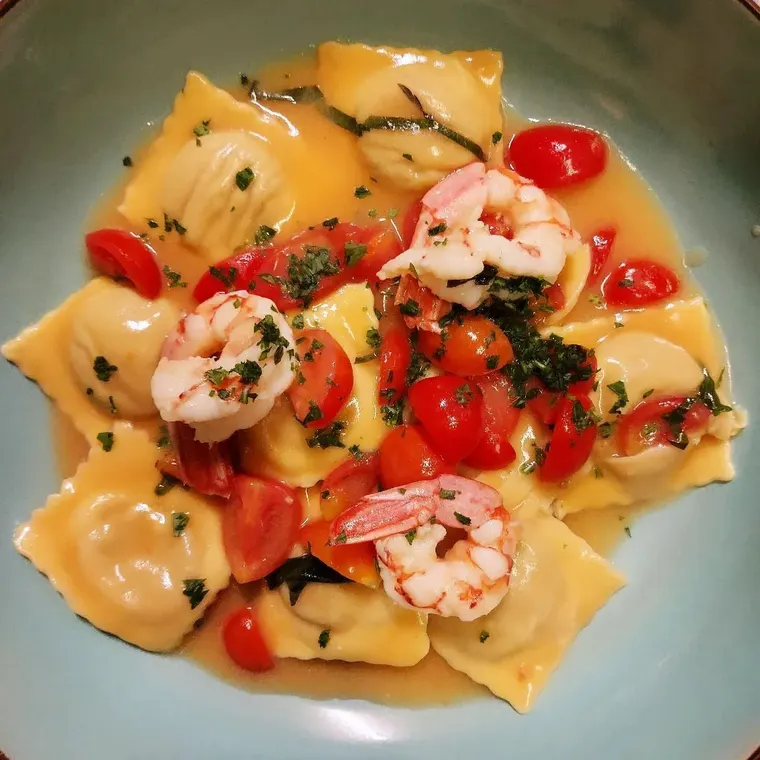
con gamberi d’Argentina in guazzetto
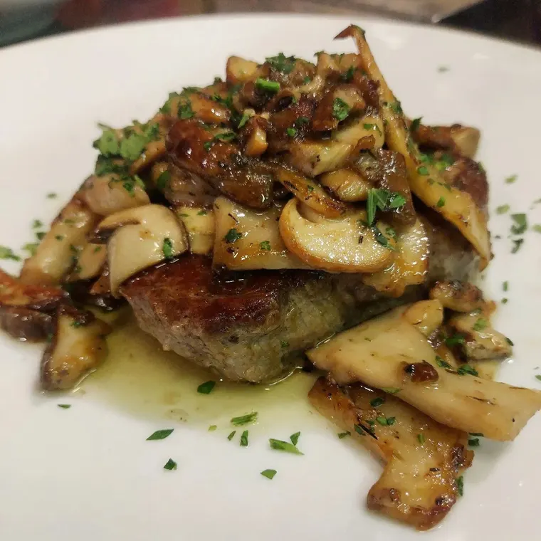
quando è stagione di funghi
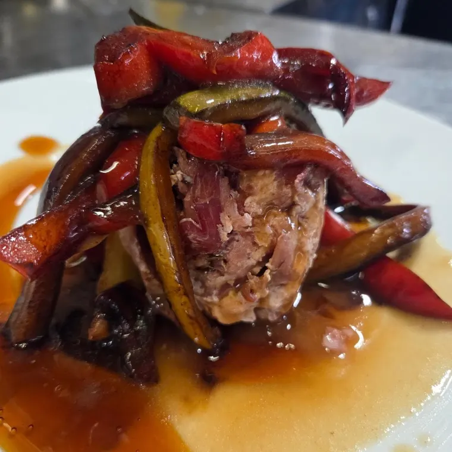
con verdure di stagione alla soia
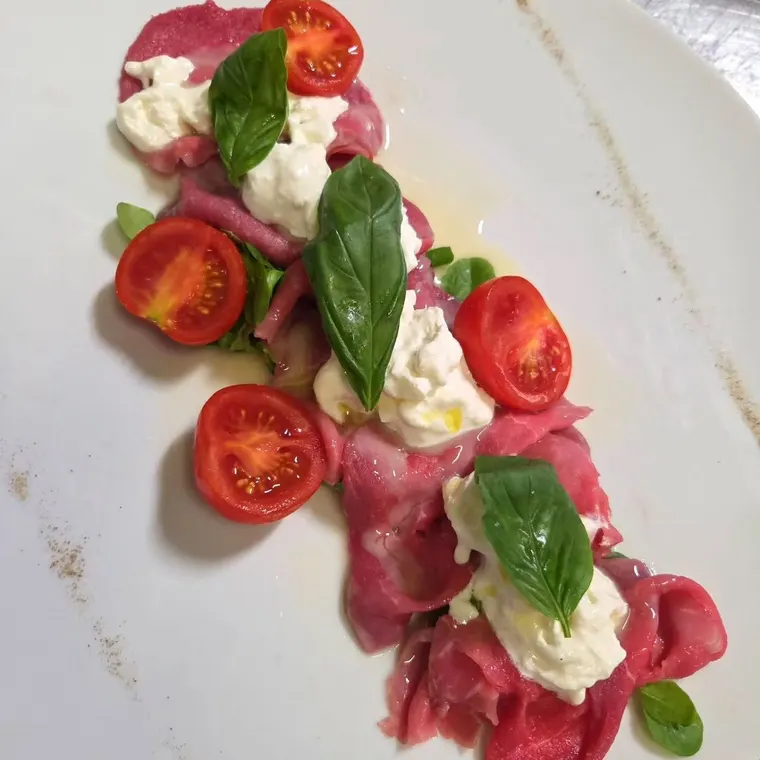
con stracciatella
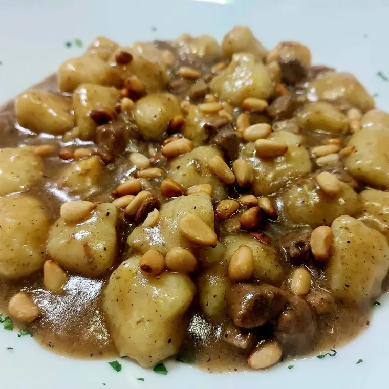
con anatra e pinoli tostati
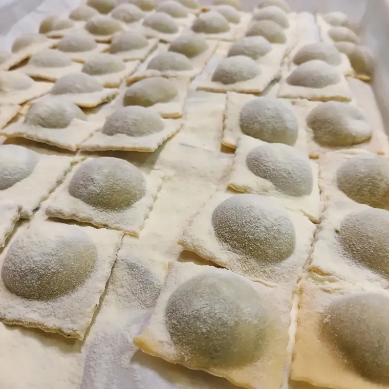
ricotta e pesto
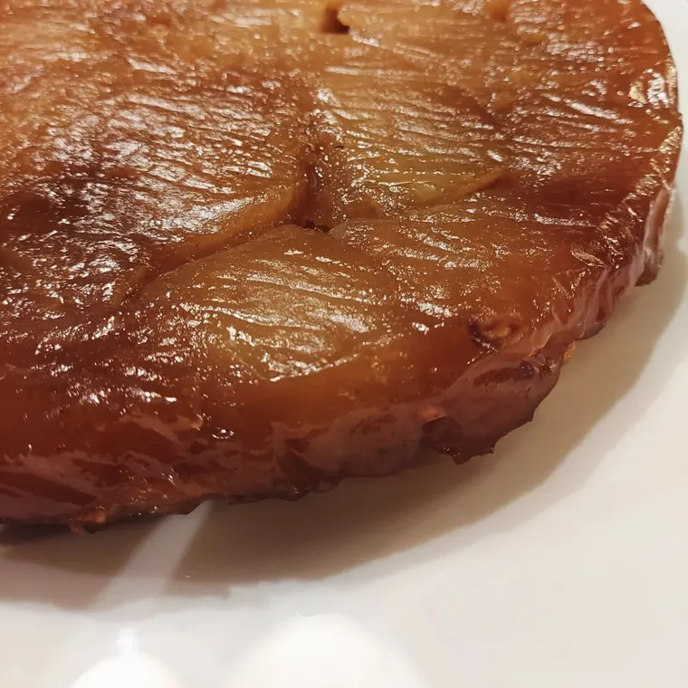
per finire
Piatti del menu e fuori carta usciti dalla nostra cucina: le proposte cambiano con la stagione e con il mercato. Per il menu di oggi, i prezzi e per allergie o intolleranze chiamaci.
Ravioli della tradizione, tortelli, gnocchi, malfatti: li prepariamo ogni giorno. I tagliolini passano dalla sfogliatrice quando arriva la comanda.
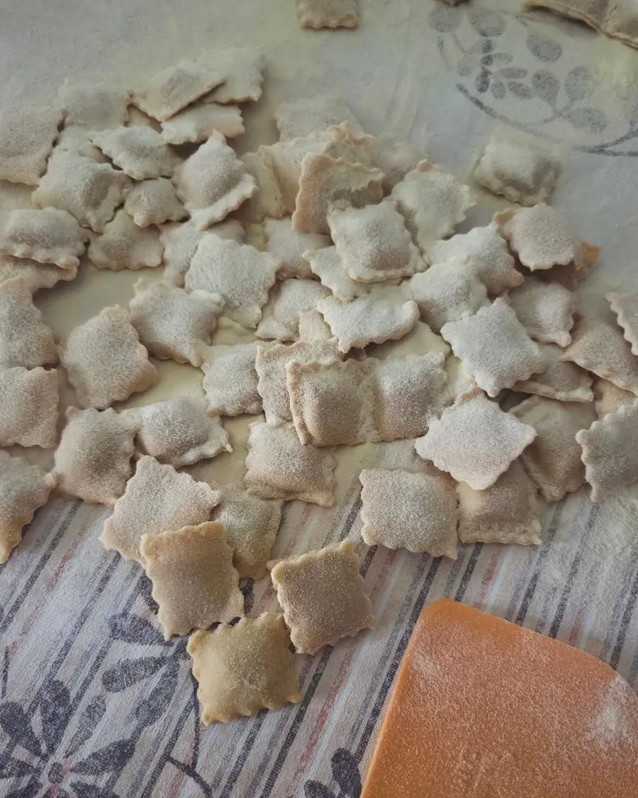
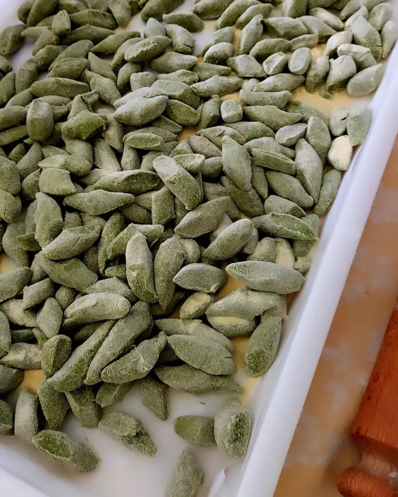
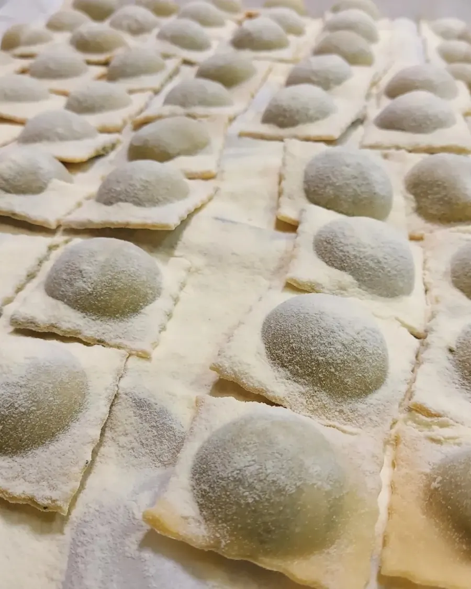
Tutti e due: la nostra cucina è «terra e mare», con piatti fuori carta che cambiano ogni settimana.
Sì: ravioli, tortelli, gnocchi e malfatti li prepariamo noi, e i tagliolini li tiriamo al momento dell’ordinazione.